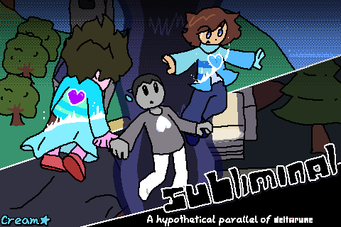

Subliminal Legacy

* For updated information, please visit the Subliminal Community Website.
Welcome to the legacy of Subliminal!
I might be bad at introducing, but Subliminal can be considered a parallel of Deltarune.
Once upon a time, when the Hometown wasn't really like what the Deltarune one has now...
There were a group of people, be them humans or monsters.
Some native, some immigrated, and some weren't even one of the world in the first place.
They were living there, as per usual - school happens, work happens, shop happens.
Some may be reserved, some may be out of bounds.
Nonetheless, when they find out about the one dark place,
something intriguing... is prone to happen.
And with this... Subliminal journeys shall start taking place.
Subliminal is a collab work created by enthusiastic Minecraft SMP / Deltarune / roleplaying enjoyers and directed (Mooostly) by unsupportedfiletype, a.k.a. File.
Actually, I would like to tell you about this place more, as it's, so far, one of my favorite collaborated works. I have had a great time participating in it. And hell, we even had an ARG circled around it!
If you are also interested in taking part, then go for it and find out. Though, I strongly recommend that you should have some experience in Soulbound, and if you'd like a customized skin for your character, Figura and Blockbench. You won't regret delving into them!
The modpack also consists of a few nice mods, if you just want to have a good Minecraft turn-battle-esque survival multiplayer. Nothing is stopping you here!
(Really. TRY SOULBOUND NOW. 2.0 IS ABSOLUTE PEAK.)
Please, note this: The Minecraft SMP server for Subliminal is currently down!
File still needs to wait for the Soulbound developer to push a few updates for the Soulbound mod so he can work on it. Let's be patient, okay?
Note: You will not get the invitation link from me. Get to Soulbound > #servers > Subliminal and figure it out yourself.
Want to know more about this place? Then help yourself! Thoooough, I'm probably not the best person to provide info that isn't written down by myself. ...But eh, here it goes anyway.
Note: A large portion of the Character page will be written in Miru's POV, and she doesn't exactly know much about some of the people mentioned. If you want to know more about them, please go to the Discord server.